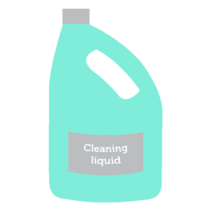

The first step in controlling workplace hazards is to identify and list them. There are many ways to identify hazards. Some hazards will be easy to identify as they have an obvious potential to cause immediate harm, other hazards will be less obvious.
Identifying hazards
Click each tab to see more information about identifying hazards.
Hazardous Substances
Hazardous substances are those that have the potential to cause medium or long-term harm. They may be solids, liquids or gases and are often in fumes, dusts, mists and vapours. This includes cleaning chemicals.
Slips, Trips and Falls
Slips, trips and falls are the most common form of injury in the workplace. They often occur as a result of:
- wet or slippery surfaces
- loose carpets, rugs or mats
- liquid splashes or spills
- dusty floors
- uneven floors.
Falling Objects
Objects falling can cause a range of injuries. Objects can fall if they are not stored in a stable and secure location or are placed too high to reach.
Stress
Stress is a complex emotional experience. We can experience both positive and negative stress. When work causes pressures that make the worker feel they cannot cope, they may experience negative stress. This can lead to serious injury and illness.
Workplace Violence
Workplace violence is any incident involving the physical attack or threatening of an employee. This may come from other employees, residents, family members or visitors.
Manual Handling
Manual handling is a significant cause of injury for workers in residential aged care facilities. Manual handling is any activity that requires you to use force, including lifting, carrying, holding, moving, pulling, pushing, lowering or restraining.
Unsafe manual handling can cause a range of injuries, including strains, sprains, back injuries, ligament injuries, abdominal hernias or lower back pain.